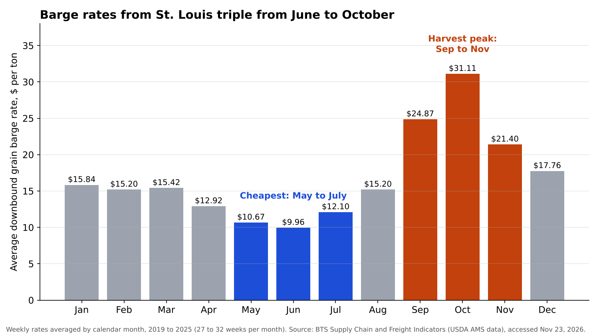
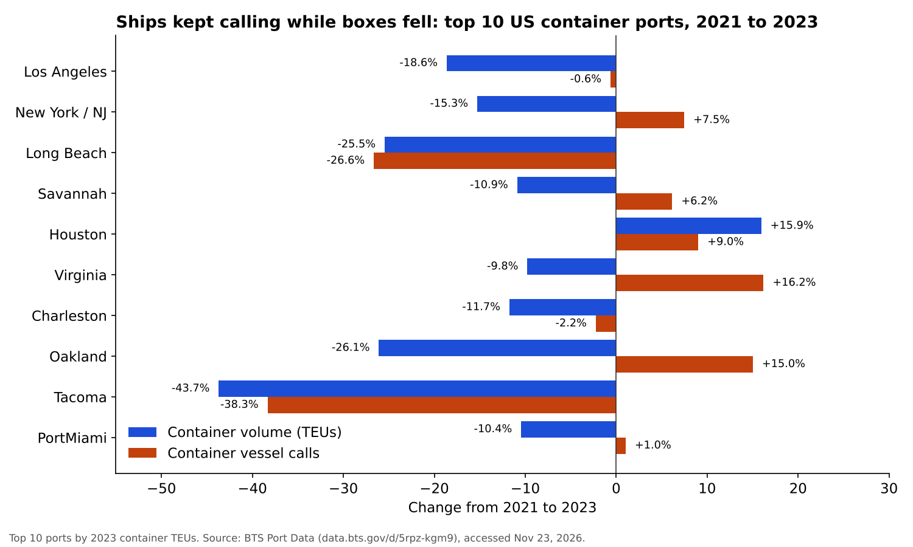

Freight timing, from public BTS data
Book barges before harvest. Size berths by boxes, not ships.
I am asking a grain exporter's transportation buyer to contract fall 2027 barge capacity out of St. Louis by July 2027, instead of buying on the spot market at harvest.
The four deliverables
Everything for the project is here. Each card opens one piece.

Business visualization
Barge rates by month (main chart), plus port volume versus ship calls. Made in Python; a Tableau Public version is coming.
Written executive case
Book fall barge space by July, and size new container berths by TEU volume, not ship calls. PDF, 3 pages.
AI/automation component
Path B: what the AI did, every number I checked, and the two places it was wrong.
This site and repository
The repo holds the charts, the PDFs and the pivot tables behind every number.
Decision 1 · dataset OP-2
Grain barge rates triple from June to October
Situation. Grain moving down the Mississippi River System to export terminals is priced weekly, in dollars per ton, at seven river origins.
Complication. The rate is highly seasonal. At St. Louis, from 2019 to 2025, it averaged $9.96 per ton in June and $31.11 in October. October was the most expensive month at all seven origins. In a bad year the peak is far worse: the October 2022 St. Louis average was $89.33.
Question. Should the buyer keep buying fall space on the spot market at harvest?
Resolution. Contract most fall 2027 capacity by July 2027, when rates are seasonally lowest, and keep a small spot share for flexibility.

What would change my recommendation: if the forward price offered in July 2027 is above $25.79 per ton, the 2019 to 2025 September to November spot average at St. Louis.
Decision 2 · dataset OP-3
Ships kept calling while container volume fell
I am asking a port authority's capital planning committee to base its next container-berth expansion on container volume (TEUs), not on the count of ship calls, at its 2027 capital review.
At the 10 largest US container ports, volume fell from 36.44 million to 30.57 million TEUs between 2021 and 2023, while container ship calls rose from 11,052 to 11,300. Each call handled fewer boxes: 2,705 TEUs per call in 2023, down from 3,297. Houston was the only one of the ten where volume grew.

| Port | TEUs 2021 | TEUs 2023 | Change | Calls 2021 | Calls 2023 | Change |
|---|---|---|---|---|---|---|
| Los Angeles | 7,037,986 | 5,726,784 | −18.6% | 876.5 | 871 | −0.6% |
| New York / New Jersey | 6,306,810 | 5,343,184 | −15.3% | 2,096.5 | 2,253.5 | +7.5% |
| Long Beach | 6,420,456 | 4,786,383 | −25.5% | 895 | 656.5 | −26.6% |
| Savannah | 4,235,900 | 3,774,774 | −10.9% | 1,501.5 | 1,594 | +6.2% |
| Houston | 2,767,842 | 3,209,304 | +15.9% | 930 | 1,014 | +9.0% |
| Virginia | 2,769,965 | 2,499,394 | −9.8% | 1,432 | 1,664 | +16.2% |
| Charleston | 2,172,194 | 1,917,209 | −11.7% | 1,248.5 | 1,220.5 | −2.2% |
| Oakland | 1,957,162 | 1,446,495 | −26.1% | 768.5 | 884 | +15.0% |
| Tacoma | 1,848,497 | 1,040,830 | −43.7% | 443.5 | 273.5 | −38.3% |
| PortMiami | 920,374 | 824,202 | −10.4% | 860 | 869 | +1.0% |
What would change my recommendation: if a port's TEU volume returns above its 2021 level while calls keep rising, the berths really are busier. Houston already meets this test.
AI use disclosure
Claude, an AI assistant, downloaded both datasets from data.bts.gov, filtered and pivoted them with Python scripts, drew both charts, and drafted this site, the README, the executive case and the AI check. I chose the two datasets from the course menu and approve what is published. Every number here is checked against the pivot files in the repository's analysis folder. The AI made two mistakes that were fixed before publishing. It saved raw files the course menu marks link-only, for two datasets I later dropped, and it first included small ports whose numbers look like reporting breaks. Details are in the AI check.
Data and honesty note
OP-2. U.S. DOT Bureau of Transportation Statistics, Supply Chain and Freight Indicators, indicator "Downbound Grain Barge Rates" (from USDA Agricultural Marketing Service). Accessed Nov 23, 2026. Public Domain U.S. Government. One row is one week's spot rate at one origin, Jan 2019 to Nov 10, 2026. I kept the 2,605 weeks that have a rate. It does not show contract prices or any firm's own costs.
OP-3. U.S. DOT Bureau of Transportation Statistics, Port Data. Accessed Nov 23, 2026. Public Domain. One row is one port, one year and one cargo measure. The data end in 2023, calls exist only for 2020 to 2023, and some calls are recorded in halves; I used them as published. It does not show ship size or berth hours.